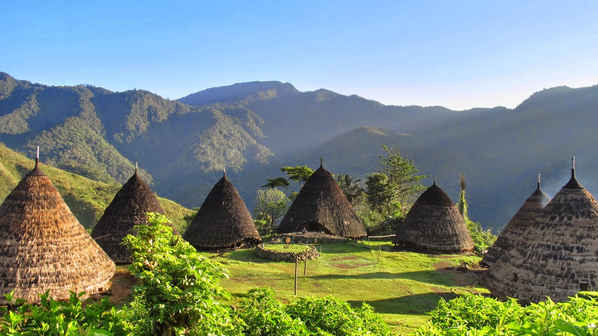

Post by Adytia, Sunday 06 Juny 2018
DESA Wae Rebo di Flores yang terletak pada ketinggian 1.200 meter di atas permukaan laut ini layaknya sebuah surga yang berada di atas awan. Perlu perjuangan untuk bisa mencapainya, namun apa yang didapat ketika sampai ke lokasi sebanding dengan perjalanan yang dilalui. Pemandangan alam berupa gunung-gunung berpadu dengan 7 rumah adat berbentuk kerucut akan memberi kesan tersendiri bagi setiap pengunjung ynag pernah datang ke Desa Wae Rebo. Desa Wae Rebo berada di barat daya kota Ruteng, Kabupaten Manggarai, Nusa Tenggara Timur. Untuk bisa sampai ke lokasi memang tidak mudah karena letaknya yang di atas gunung. Perlu tenaga ekstra untuk melakukan perjalanan kaki selama kurang lebih 3 sampai dengan 4 jam. Tergantung kondisi fisik karena trekking menuju desa Wae Rebo mendaki sejauh 7 km.
Desa Wae Rebo saya sebut sebagai desa terindah di Indonesia, dan desa ini sama sekali tidak ada signal hp. Desa Wae Rebo dari sisi pariwisata sangat dikelola dengan baik, karena desa ini didampingi dan diberikan bimbingan tentang Pariwisata oleh Indonesia Ecotourism Network. Tujuannya memajukan desa-desa yang tadinya kurang diperhatikan menjadi sebuah desa wisata yang banyak orang ingin kunjungi. Pengunjung yang ingin ke Desa Wae Rebo di Flores harus mulai dari Ruteng. Jika dari Denpasar (Bali), bisa langsung menuju Ruteng lewat jalur udara. Apabila tidak ada penerbangan menuju Ruteng, anda dapat menggunakan bus atau travel dari Labuan Bajo, ibu kota Kabupaten Manggarai Barat yang memakan waktu sekitar 6 jam. Setelah tiba di Ruteng, perjalanan dilanjutkan menuju Desa Denge atau Dintor selama kurang lebih 2 jam yang merupakan desa terakhir yang dapat diakses dengan kendaraan.
Sumber : https://travel.kompas.com/read/2015/11/04/123600827/Wae.Rebo.Desa.Tradisional.Terindah.di.Indonesia.